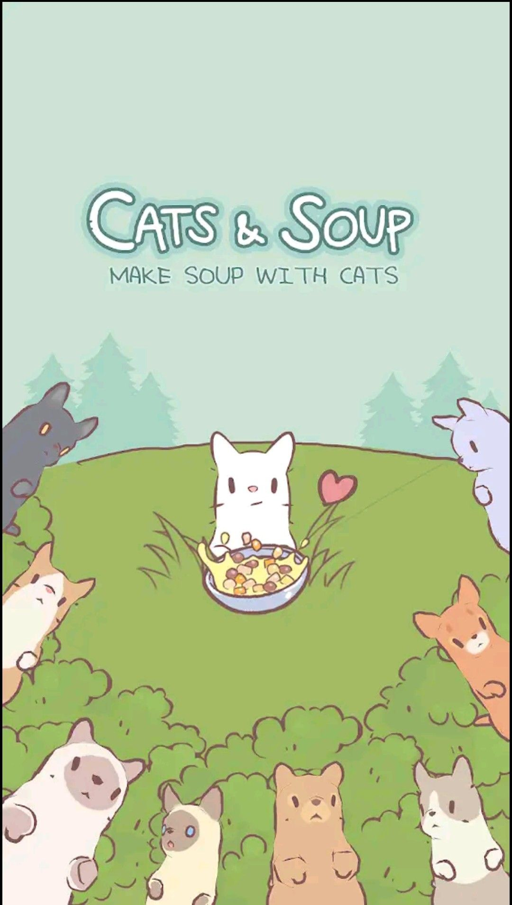
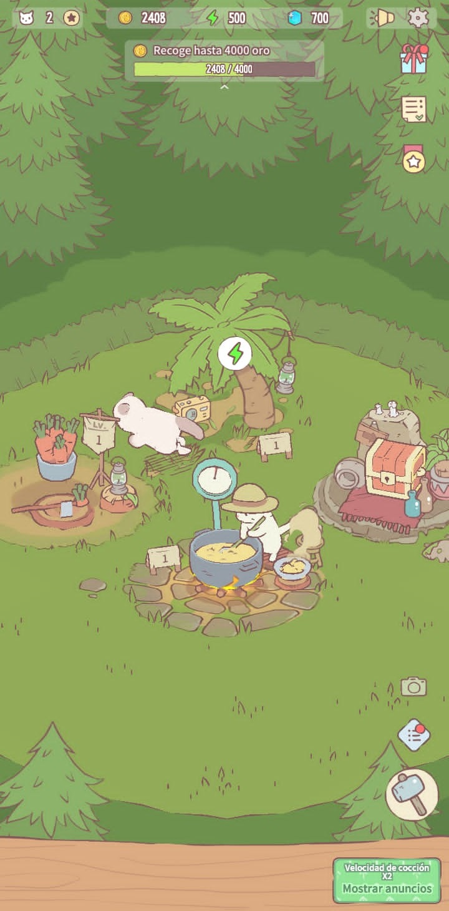
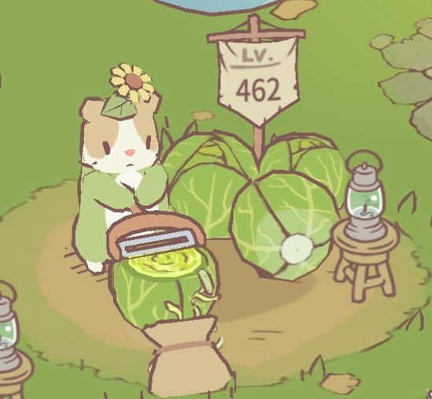
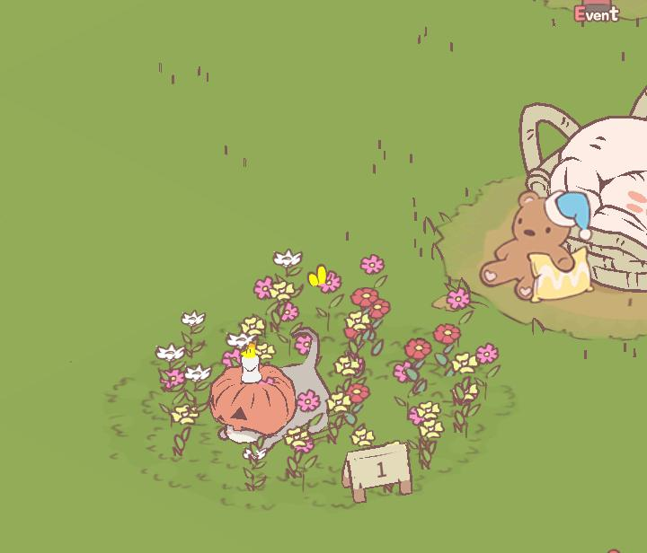
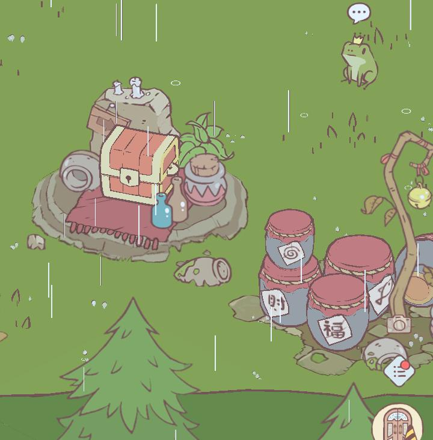
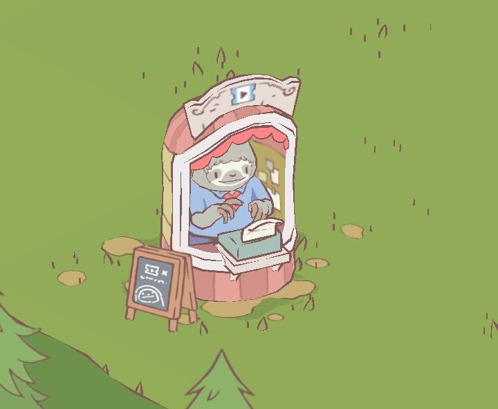
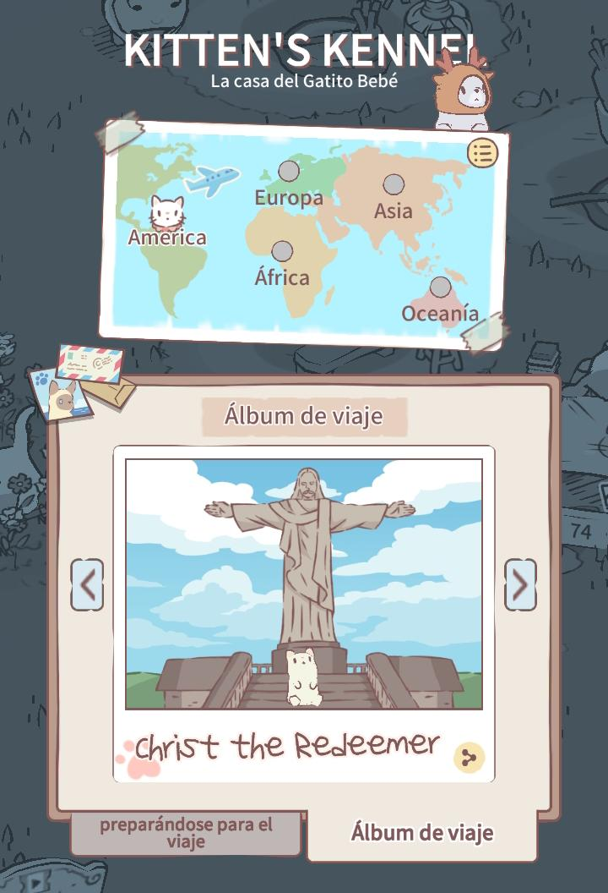
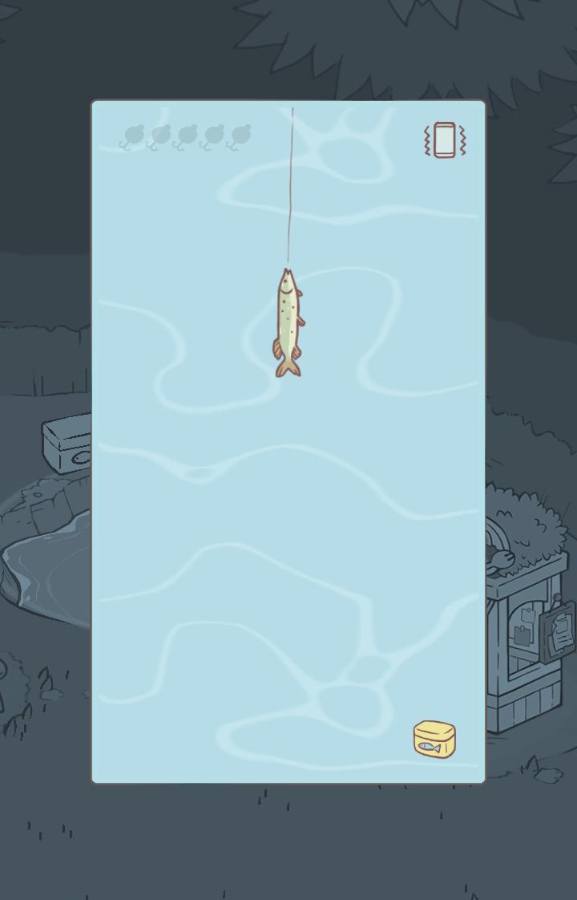
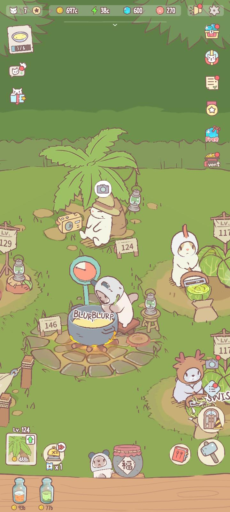
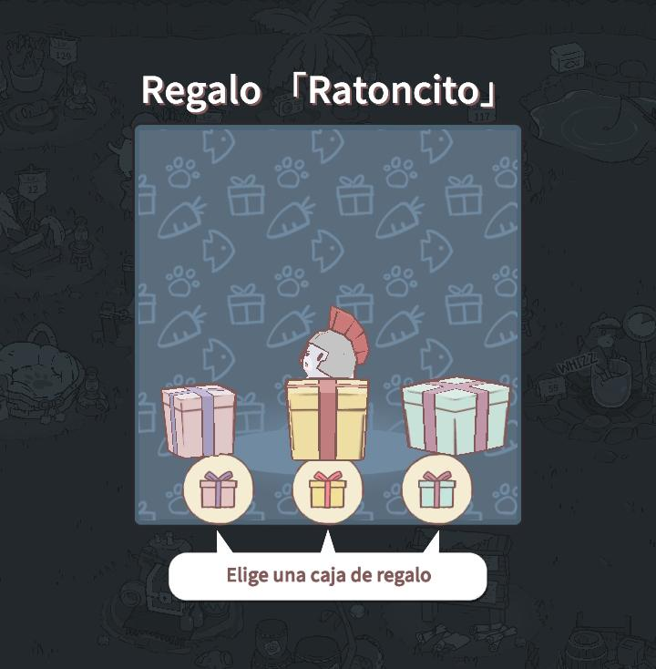

Cats and Soup

Gatitos disponibles
- Blanquita
- Lunita
- Almendrito
- Linterna Verde
- Tostito
- Ratoncito
- Chinchilla
Características
- Nombre
- Origen del nombre
- Sombrerito y accesorios
- Raza
- Habilidad
Desarrollador: HIDEA
Plataformas: Android, iOS
Distribuidor: HIDEA
Este juego es tan tierno, con hermosos gráficos se trata de tener gatitos cocineros, el principal gato está en la olla haciendo sopa y luego, a medida que avances en el juego tendrás más gatos con un trabajo diferente.
IMPORTANTE: si no llegas a vender tu comida se venderá a un precio más bajo y lo hará automáticamente, para que no pase eso solo dale un clic a cada comida que aparece en la madera en la parte de inferior de la pantalla. Bueno y eso sería lo mismo para las otras recetas, lo que cambia es el dibujo claro. Si es receta de un jugo, tendrás un jugo y para lo de “frito”, lo mismo.
Cocinado / Relajación / Función / Especial
Cocinado:
Instalaciones para la comida, si desbloqueas una de estas, por ejemplo “rebanar zanahorias” , tendrás una receta nueva que tiene que ver con la zanahoria.
Relajación:
Estas instalaciones te dan energía que te ayuda para subir el nivel de las recetas de comida, ahí descansan los gatitos.
Función:
Ofrecen accesorios y regalos para los gatitos, o algunos beneficios, como premios o recompensas
Especial:
Algunas de estas las desbloqueas en eventos y otras que te las da el juego a medida que avances, útiles para funciones especiales o poco comunes, también unas se pagan con dinero real
Origen
Una gatita nacida en el mundo humano que por tomar tanta lechita y ser intolerante a la lactosa se volvió blanquita
Es una señora gatita muy amable, la jefa de cocina
Accesorios: Sombrerito de copa con listoncito rojo
Raza: Angora turco
Habilidad: Rebanar Zanahorias
Origen
Cuenta la leyenda que esta gatita viene de la luna, la primera vez que se le vio fue en una colina, era una noche nublada y apareció dormida en un pequeño espacio de claro de luna
Otros piensan que es la luna misma, por la luz tan brillante y tranquila que transmite
Accesorios: Gorrito de Panda
Raza: Himalaya
Habilidad: Cortar Zetas
Origen
La reencarnación de un conejito lop con almendritas en las orejitas en gatito, es vegano y su bebida favorita es la leche de almendras
Gatito chismoso, babea cuando lo acarician, es muy lindo y le gustan las canciones de Lana del Rey
Accesorios: Gorrito de Gallina
Raza: Furgoneta Turca
Habilidad: Rebanar Repollo y Conseguir el Globo Aerostático Dorado
Origen
Cayó desde el espacio buscando un nuevo universo que proteger, pero encontró su lugar haciendo juguito y ahora vive tranquilamente
Valiente defensor del universo, sus ojitos son verdes por comer exceso de Matcha Espacial
Accesorios: Gorrito para el Sol
Raza: Dragon Li
Habilidad: Hacer Jugo
Origen
Nadie sabe de donde viene, solo salió del bosque desconcertado, se cree que fue criado por una comunidad de ranitas
Valiente y noble, se quemó la carita y las patitas al intentar robar barbacoa, le gusta tanto que ahora la cocina
Accesorios: Sombrero y Chubasquero de rana
Raza: Siamés
Habilidad: Hacer Barbacoa
Origen
El más joven del grupo, lo dejaron los ratones afuera del bosque en una canastita, y ahora hace sopita
Muy callado y serio, no quiere que descubran que solo sabe hablar ratón *squik
Accesorios: Casco de Armadura gladiador
Raza: Británico de pelo corto
Habilidad: Cosechar Avena
Origen
Llegó desde el mundo humano buscando un refugio, pues su humano la había abandonado
La gatita más alegre, juega mucho y es querida por todos
Accesorios: Cabeza de Calabaza
Raza: Singapur
Habilidad: Cortar caña de Azúcar
El juego tiene muchos detalles lindos e interesantes que vas descubriendo poco a poco que valen la pena observar
- Hay un gatito bebé que viaja y te trae postales del mundo
- Puedes pescar para que los gatitos coman y estén felices y saludables
- Los gatitos te piden que les tomes fotos
- Los gatitos te traen regalitos

Haz click en esta imagen para una sorpresa de gatito